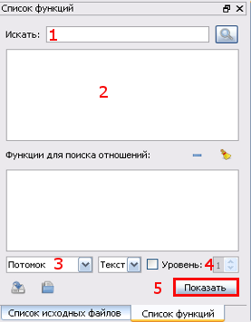

Содержание
Что такое QSAGUI?
Начало
Создание графа вызовов
Соединение графов вызовов
Очистка графа вызовов
Обновление графа вызовов
Получение списков файлов/функций
Показать граф вызовов
Настройки
|
Получение списков файлов/функций
Загрузите граф вызовов (эта процедура разбиралась в секции Показать граф вызовов).
Функции и списки файлов выглядят одинаково:

1. Редактирование строки для поиска функции/файла в списке.
2. Список функций/файлов.
3. Тип отношения.
4. Уровень вложенности.
5. Выходной формат. Для отображения SVG убедитесь, что Graphviz установлен.
Нажмите кнопку "Показать", чтобы видеть отношения.
|